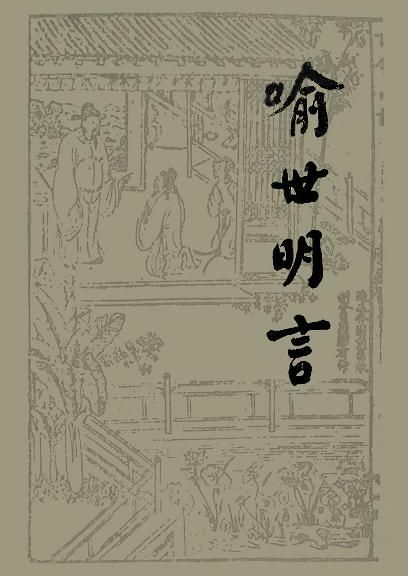

第二十三卷张舜美灯宵得丽女
第二十三卷张舜美灯宵得丽女#

太平时节元宵夜，十里灯球映月轮。
多少王孙并士女，绮罗丛里尽怀春。
话说东京汴梁，宋天子徽宗放灯买市，十分富盛。且说在京一个贵官公子，姓张名生，年方十八，生得十分聪俊，未娶妻室。因元宵到乾明寺看灯，忽于殿上拾得一红绡帕子，帕角系一个香囊。细看帕上，有诗一首云：囊里真香心事封，鲛绡一幅泪流红。
殷勤聊作江妃佩，赠与多情置袖中。
诗尾后又有细字一行云：“有情者拾得此帕，不可相忘。
请待来年正月十五夜，于相蓝后门一会，车前有鸳鸯灯是也。”
张生吟讽数次，叹赏久之，乃和其诗曰：浓麝因知玉手封，轻绡料比杏腮红。
虽然未近来春约，已胜襄王魂梦中。
自此之后，张生以时挨日，以日挨月，以月挨年。倏忽间乌飞电走，又换新正。将近元宵，思赴去年之约，乃于十四日晚，候于相蓝后门，果见车一辆，灯挂双鸳鸯，呵卫甚众。张生惊喜无措，无因问答，乃诵诗一首，或先或后，近车吟咏。云：何人遗下一红绡？暗遣吟怀意气饶。
料想佳人初失去，几回纤手摸裙腰。
车中女子闻生吟讽，默念昔日遗香囊之事谐矣。遂启帘窥生，见生容貌皎洁，仪度闲雅，愈觉动情。遂令侍女金花者，通达情款，生亦会意。须臾，香车远去，已失所在。
次夜，生复伺于旧处。俄有青盖旧车，迤逦而来，更无人从，车前挂双鸳鸯灯。生睹车中，非昨夜相遇之女，乃一尼耳。车夫连称：“送师归院去。”生迟疑间，见尼转手而招生，生潜随之，至乾明寺。老尼迎门谓曰：“何归迟也？”尼入院，生随入小轩，轩中已张灯列宴。尼乃卸去道装，忽见绿鬓堆云，红裳映月。生女联坐，老尼侍傍。酒行之后，女曰：“愿见去年相约之媒。”生取香囊红绡，付女视之。女方笑曰：“京都往来人众，偏落君手，岂非天赐尔我姻缘耶？”生曰：“当时得之，亦曾奉和。”因举其诗。女喜曰：“真我夫也。”
于是与生就枕，极尽欢娱。
顷而鸡声四起，谓生曰：“妾乃霍员外家第八房之妾。员外老病，经年不到妾房，妾每夜焚香祝天，愿遇一良人，成其夫妇，幸得见君子，足慰平生。妾今用计脱身，不可复入。
此身已属之君，情愿生死相随；不然，将置妾于何地也？”生曰：“我非木石，岂忍分离？但寻思无计。若事发相连，不若与你悬梁同死，双双做风流之鬼耳。”说罢，相抱悲泣。
老尼从外来曰：“你等要成夫妇，但恨无心耳，何必做没下梢事！”生女双双跪拜求计，老尼曰：“汝能远涉江湖，变更姓名于千里之外，可得尽终世之情也。”女与生俯首受计。
老尼遂取出黄白一包，付生曰：“此乃小娘子平日所寄，今送还官人，以为路资。”生亦回家，收拾细软，打做一包。是夜，拜别了老尼，双双出门，走到通津邸中借宿。次早顾舟，自汴涉淮，直至苏州平江，创第而居。两情好合，谐老百年。正是：
意似鸳鸯飞比翼，情同鸾凤舞和鸣。
今日为甚说这段话？却有个波俏的女子，也因灯夜游玩，撞着个狂荡的小秀才，惹出一场奇奇怪怪的事来。未知久后成得夫妇也否？且听下回分解。正是：
灯初放夜人初会，梅正开时月正圆。
且道那女子遇着甚人？那人是越州人氏，姓张，双名舜美。年方弱冠，是一个轻俊标致的秀士，风流未遇的才人。偶因乡试来杭，不能中选，遂淹留邸舍中，半年有余。正逢着上元佳节，舜美不免关闭房门，游玩则个。况杭州是个热闹去处，怎见得杭州好景？柳耆卿有首《望海潮》词，单道杭州好处，词云：东南形胜，三吴都会，钱塘自古繁华。烟柳画桥，风帘翠幕，参差十万人家。云树绕堤沙，怒涛卷霜雪，天堑无涯。市列珠玑，户盈罗绮，竞奢华。
重湖叠#t清佳，有三秋桂子，十里荷花。弦管弄晴，菱歌泛夜，嬉嬉的钓叟莲娃。千骑拥高牙，乘时听箫鼓，吟赏烟霞。异日图将好景，归到凤池赊。
舜美观看之际，勃然兴发，遂口占《如梦令》一词以解怀，云：明月娟娟筛柳，春色溶溶如酒。今夕试华灯，约伴六桥行走回首，回首，楼上玉人知否？
且诵且行之次，遥见灯影中，一个丫鬟，肩上斜挑一盏彩鸾灯，后面一女子，冉冉而来。那女子生得凤髻铺云，蛾眉扫月，生成媚态，出色娇姿。舜美一见了那女子，沉醉顿醒，竦然整冠，汤瓶样摇摆过来。为甚的做如此模样？元来调光的人，只在初见之时，就便使个手段。凡萍水相逢，有几般讨探之法。做子弟的，听我把调光经表白几句：雅容卖俏，鲜服夸豪。远觑近观，只在双眸传递；捱肩擦背，全凭健足跟随。我既有意，自当送情；他肯留心，必然答笑。点头须会，咳嗽便知。
紧处不可放迟，闲中偏宜着闹。讪语时，口要紧；刮涎处，脸须皮。冷面撇清，还察其中真假；回头揽事，定知就里应承。说不尽百计讨探，凑成来十分机巧。假饶心似铁，弄得意如糖。
说那女子被舜美撩弄，禁持不住，眼也花了，心也乱了，腿也苏了，脚也麻了。痴呆了半晌，四目相睃，面面有情。那女子走得紧，舜美也跟得紧；走得慢，也跟得慢；但不能交接一语。不觉又到众安桥，桥上做卖做买，东来西去的，挨挤不过。过得众安桥，失却了女子所在，只得闷闷而回。开了房门，风儿又吹，灯儿又暗，枕儿又寒，被儿又冷，怎生睡得？心里丢不下那个女子，思量再得与他一会也好。你看世间有这等的痴心汉子，实是好笑。正是：
半窗花影模糊月，一段春愁着摸人。
舜美甫能够捱到天明，起来梳裹了，三餐已毕，只见街市上人，又早收拾看灯。舜美身心按捺不下，急忙关闭房门，径往夜来相遇之处。立了一会，转了一会，寻了一会，靠了一会，呆了一会，只是等不见那女子来。遂调《如梦令》一词消遣，云：燕赏良宵无寐，笑倚东风残醉。未审那人儿，今夕玩游何地？留意，留意，几度欲归还滞。
吟毕，又等了多时，正尔要回，忽见小鬟挑着彩鸾灯，同那女子从人丛中挨将出来。那女子瞥见舜美，笑容可掬，况舜美也约莫着有五、六分上手。那女子径往盐桥，进广福庙中拈香，礼拜已毕，转入后殿。舜美随于后，那女子偶尔回头，不觉失笑一声。舜美呆着老脸，陪笑起来。他两个挨挨擦擦，前前后后，不复顾忌。那女子回身袖中遗下一同心方胜儿。舜美会意，俯而拾之，就于灯下拆开一看，乃是一幅花笺纸。不看万事全休，只因看了，直教一个秀才，害了一二年鬼病相思，险些送了一条性命。你道花笺上写的甚么文字？原来也是个《如梦令》，词云：
邂逅相逢如故，引起春心追慕。
高挂彩鸾灯，正是儿家庭户。
那步，那步，千万来宵垂顾。
词后复书云：“女之敝居，十官子巷中，朝南第八家。明日父母兄嫂赶江干舅家灯会，十七日方归，止妾与侍儿小英在家。
敢邀仙郎惠然枉驾，少慰鄙怀，妾当焚香扫门，迎候翘望。妾刘素香拜柬。”舜美看了多时，喜出望外。那女子已去了，舜美步归邸舍，一夜无眠。
次早又是十五日，舜美捱至天晚，便至其外，不敢造次突入。乃成《如梦令》一词，来往歌云：漏滴铜壶声唱咽，风送金猊香烈。一见彩鸾灯，顿使狂心烦热。应说，应说，昨夜相逢时节。
女子听得歌声，掀帘而出，果是灯前相见可意人儿。遂迎迓到于房中，吹灭银灯，解衣就枕。他两个正是旷夫怨女，相见如饿虎逢羊，苍蝇见血，那有工夫问名叙礼？且做一班半点儿事。有《南乡子》词一首，单题着交欢趣的。道是：粉汗湿罗衫，为雨为云底事忙？两只脚儿肩上阁，难当。颦蹙春山入醉乡。忒杀太颠狂，口口声声叫我郎。舌送丁香娇欲滴，初尝甘露，非蜜非糖滋味长。
两个讲欢已罢，舜美曰：“仆乃途路之人，荷承垂盼，以凡遇仙。自思白面书生，愧无纤毫奉报。”素香抚舜美背曰：“我因爱子胸中锦绣，非图你囊里金珠。”舜美称谢不已。素香忽然长叹，流泪而言曰：“今日已过，明日父母回家，不能复相聚矣，如之奈何？”两个沉吟半晌，计上心来。素香曰：“你我莫若私奔他所，免使两地永抱相思之苦，未知郎意何如？”舜美大喜曰：“我有远族，见在镇江五条街开个招商客店，可往依焉。”素香应允。
是夜素香收拾了一包金珠，也妆做一个男儿打扮，与舜美携手迤逦而行。将及二鼓，方才行到北关门下。你道因何三四里路，走了许多时光？只为那女子小小一双脚儿，只好在蹀廊缓步，芳径轻移，轻抬绣阁之中，出没绣裙之下。
脚
又穿着一双大靴，教他跋长途，登远道，心中又慌，怎地的拖得动？且又城中人要出城，城外人要入城，两下不免撒手。
前后随行，出得第二重门，被人一涌，各不相顾。那女子径出城门，从半塘横去了。舜美虑他是妇人，身体柔弱，挨挤不出去，还在城里，也不见得，急回身寻问把门军士。军士说道：“适间有个少年秀才，寻问同辈，回未半里多地。”舜美自思：“一条路往钱塘门，一条路往师姑桥，一条路往褚家堂，三、四条叉路，往那一条好？”踌躇半晌，只得依旧路赶去。至十官子巷，那女子家中，门已闭了，悄无人声。急急回至北关门，门又闭了。整整寻了一夜。
巴到天明，挨门而出。至新马头，见一伙人围得紧紧的，看一只绣鞋儿。舜美认得是女子脱下之鞋，不敢开声。众人说：“不知何人家女孩儿，为何事来，溺水而死，遗鞋在此？”
舜美听罢，惊得浑身冷汗。复到城中探信，满城人喧嚷，皆说十官子巷内刘家女儿，被人拐去，又说投水死了，随处做公的缉访。这舜美自因受了一昼夜辛苦，不曾吃些饭食，况又痛伤那女子死于非命，回至店中，一卧不起，寒热交作，病势沉重将危。正是：
相思相见知何日？多病多愁损少年。
且不说舜美卧病在床，却说刘素香自北关门失散了舜美，从二更直走到五更，方至新马头。自念舜美寻我不见，必然先往镇江一路去了，遂暗暗地脱下一只绣花鞋在地。为甚的？
他惟恐家中有人追赶，故托此相示，以绝父母之念。素香乘天未明，赁舟沿流而去。数日之间，虽水火之事，亦自谨慎，梢人亦不知其为女人也。比至镇江，打发舟钱登岸，随路物色，访张舜美亲族。又忘其姓名居止，问来问去，看看日落山腰，又无宿处。偶至江亭，少憩之次，此时乃是正月二十二日，况是月出较迟，是夜夜色苍然，渔灯隐映，不能辨认咫尺。素香自思，为他抛离乡井父母兄弟，又无消息，不若从浣纱女游于江中。哭了多时，只恨那人不知妾之死所。不觉半夜光景，亭隙中射下月光来。遂移步凭栏，四顾澄江，渺茫千里。正是：
一江流水三更月，两岸青山六代都。
素香呜呜咽咽，自言自语，自悲自叹，不觉亭角暗中，走出一个尼师，向前问曰：“人耶？鬼耶？何自苦如此？”素香听罢，答曰：“荷承垂问，敢不实告。妾乃浙江人也，因随良人之任，前往新丰。却不思慢藏海盗，梢子因瞰良人囊金，贱妾容貌，辄起不仁之心。良人、婢仆皆被杀害，独留妾一身。
梢子欲淫污妾，妾誓死不从。次日梢子饮酒大醉，妾遂着先夫衣冠，脱身奔逃，偶然至此。”素香难以私奔相告，假托此一段说话。尼师闻之，愀然曰：“老身在施主家，渡江归迟，天遣到此亭中与娘子相遇，真是前缘。娘子肯从我否？”素香曰：“妾身回视家乡，千山万水，得蒙提挈，乃再生之赐。”尼师曰：“出家人以慈悲方便为本，此分内事，不必虑也。”素香拜谢。
天明，随至大慈庵，屏去俗衣，束发簪冠，独处一室。诸品经咒，目过辄能成诵。旦夕参礼神佛，拜告白衣大士，并持大士经文，哀求再会。尼师见其贞顺，自谓得人，不在话下。
再说舜美在那店中，延医调治，日渐平复。不肯回乡，只在邸舍中温习经史。光阴荏苒，又逢着上元灯夕。舜美追思去年之事，仍往十官子巷中一看，可怜景物依然，只是少个人在目前。闷闷归房，因诵秦少游学士所作《生查子》词云：去年元夜时，花市灯如昼。月在柳梢头，人约黄昏后。今年元夜时，月与灯依旧。不见去年人，泪湿春衫袖舜美无情无绪，洒泪而归。惭愧物是人非，怅然绝望，立誓终身不娶，以答素香之情。
在杭州倏忽三年，又逢大比，舜美得中首选解元。赴鹿鸣宴罢，驰书归报父母，亲友贺者填门。数日后，将带琴剑书箱，上京会试。一路风行露宿，舟次镇江江口，将欲渡江，忽狂风大作。移舟傍岸，少待风息。其风数日不止，只得停泊在彼。
且说刘素香在大慈庵中，荏苒首尾三载。是夜，忽梦白衣大士报云：“尔夫明日来也。”恍然惊觉，汗流如雨。自思：“平素未尝如此，真是奇怪！”不言与师知道。
舜美等了一日又是一日，心中好生不快，遂散步独行，沿江闲看。行至一松竹林中，中有小庵，题曰“大慈之庵”，清雅可爱。趋身入内，庵主出迎，拉至中堂供茶。也是天使其然，刘素香向窗楞中一看，唬得目睁口呆，宛如酒醒梦觉。尼师忽入换茶，素香乃具道其由。尼师出问曰：“相公莫非越州张秀才乎？”舜美骇然曰：“仆与吾师素昧平生，何缘垂识？”
尼师又问曰：“曾娶妻否？”舜美簌簌泪下，乃应曰：“曾有妻刘氏素香，因三载前元宵夜观灯失去，未知存亡下落。今仆虽不才，得中解元，便到京得进士，终身亦誓不再娶也。”师遂呼女子出见，两个抱头恸哭。多时，收泪而言曰：“不意今生再得相见！”悲喜交集，拜谢老尼。乃沐浴更衣，诣大士前，焚香百拜。次以白金百两，段绢二端，奉尼师为寿。两下相别，双双下舟。真个似缺月重圆，断弦再续，大喜不胜。
一路至京，连科进士，除授福建兴化府莆田县尹。谢恩回乡，路经镇江，二人复访大慈庵，赠尼师金一笏。回至杭州，径到十官子巷，投帖拜望。刘公看见车马临门，大红帖子上写着“小婿张舜美”，只道误投了。正待推辞，只见少年夫妇，都穿着朝廷命服，双双拜于庭下。父母兄嫂见之大惊，悲喜交集。丈母道：“因元宵失却我儿，闻知投水身死，我们苦得死而复生。不意今日再得相会，况得此佳婿，刘门之幸。”
乃大排筵会，作贺数日，令小英随去。二人别了丈人、丈母，到家见了父母。舜美告知前事，令妻出拜公姑。张公、张母大喜过望，作宴庆贺。不数日，同妻别父母上任去讫。久后，舜美官至天官侍郎，子孙贵盛。有诗为证：间别三年死复生，润州城下念多情。
今宵然烛频频照，笑眼相看分外明。